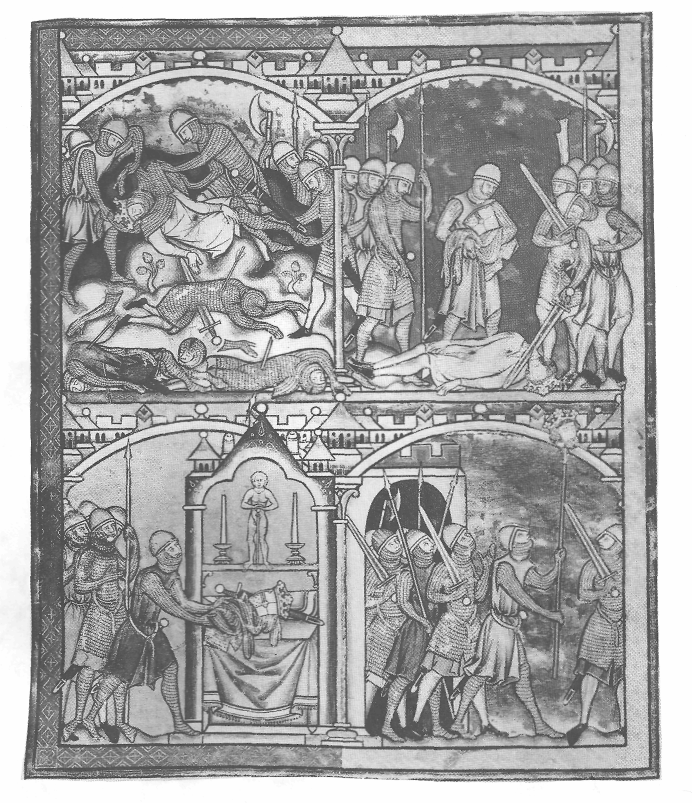
Players are major Knights of the Round Table trying to prove to King Arthur that they are the worthiest to be promoted to warden of new territories that have just been conquered.
The game involves claiming manors (and trying to hold on to them), improving them by adding beehives, a water mill, hiring reeves and so on so that they yield a higher income, and thereby building up a retinue of knights and men-at-arms that can be used to increase your land holding.
Although military strategy is important (fellow knights are better persuaded to yield their lands with a suitable show of strength!) it is the balance of the economic and the military that is the key to victory.
The rules are split into three sections:
A Standard rules and victory conditions: This is a fast, simple to play version of the game, intended for the first game and any game where time is limited.
B Optional rules: These can be used with either standard or advanced game. These add rules for weather, castles, raiding, fate rolls etc..
C Advanced rules: These rules bring in the building of churches & stone circles, King Arthur's visits and Reverence Points.
Throughout the rules the leader of your forces, a Knight of the Round Table, is referred to as the lord to distinguish him from other knights in your force.
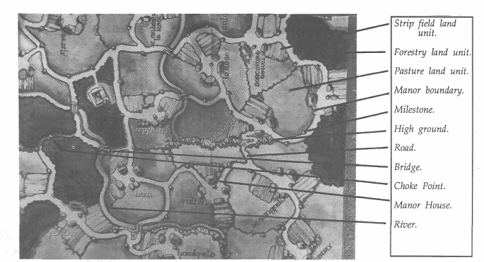
The board represents a fertile valley somewhere deep in the countryside of Arthurian Britain. At the start of the game it has no warden. Land is organised into manors.
A typical manor comprises a village, several units of strip field cultivated by the villeins for themselves and their lord, and units of either pasture or forest. Most manors have four land units, but others have more, or rights of the river on their border. This makes some manors more valuable than others, while weather affects different land types in different ways (See Optional Rules).
Linking the manors are roads, along which your troops travel to spread your wise and just stewardship. At intervals along roads are milestones to measure movement. The centre of a manor is always a mile measure from the nearest milestones. Somewhere in the manor is a larger house than the others which is the manor house. Other features of this valley are its river and the bridges crossing it and areas of high ground.
Also on the board are Carse Abbey and Bestly Priory, two independent but rich religious establishments.
"Then Arthur let make Sir Kay seneschal of England; and Sir Baudwin of Britain was made constable; and Sir Ulfius was made chamberlain; and Sir Brastias was made warden to wait upon the north from the Trent forwards, for it was that time the most part the king's enemies. But within few years after, Arthur won all the north, Scotland and all that were under their obeissance. Also Wales, a part of it held against Arthur, but he overcame them all as he did the remnant through the noble prowess of himself and his knights of the Round Table"
Morte d'Arthur. Sir Thomas Malory. Book 1. Chapter vii.
That's the challenge. The King needs good wardens to oversee the new territories he has conquered. There are rich pastures, fields of corn, cool dark forests with deer, boar and timber, rivers alive in fish, manors, villages, churches, castles; all the richness of ancient Britain can be yours. All you need is to demonstrate a firm hand and a fruitful estate. And a sharp sword, of course; there's no lawyers to turn to in Arthurian England. You have a problem with a neighbour? You go settle it- personally. But the glittering prize will only be won by an understanding of the subtle relationship between the land, those who work it and those who hold it. How to exploit the feudal economy and maximise income from your manors will be as important as battle tactics. Do not expect rapid victory. Excalibur will be won by the player who can best husband resources to create the most effective strategy across a series of campaigns lasting several years.
| CONTENTS | ||
| 1. | Game Objectives & the Playing Board. | 3 |
| A. THE STANDARD GAME | ||
| 2. | Victory Conditions | 4 |
| 3. | Starting the Game. | |
| 4. | Game Time. | 5 |
| 5. | The Manor. | 6 |
| 6. | Movement. | |
| 7. | Troops and Troop Types. | 9 |
| 8. | Combat. | 9 |
| 9. | The Abbey and the Priory. | 12 |
| 10. | Death of a Lord. | |
| 11. | Paying the Retinue. | 12 |
| B. | OPTIONAL RULES | |
| 12. | Weather. | 13 |
| 13. | Manor houses and Castles. | 13 |
| 14. | Pillaging. | 14 |
| 15. | Fate rolls. | 14 |
| 16. | Valuation of assets. | 14 |
| C. | ADVANCED RULES | |
| 17. | Victory Conditions. | 15 |
| 18. | Religion. | 15 |
| 19. | Churches. | 15 |
| 20. | Stone Circles. | 16 |
| 21. | King Arthur's Inspections. | 16 |
| 22. | Reverence Points. | 16 |
| APPENDIX | ||
| 23. | A Society of Slaves? | 17 |
| 24. | Designer's Notes & Credits. | 18 |
| 25. | Fate Rolls Table & Order Sheet. | 20 |
"Then must I needs unto battle, said Sir Lancelot...And so they departed either from other. And then either party made them ready on the morn for to do battle, and great purveyance was made on both sides; and Sir Gawaine let purvey many knights for to wait upon Sir Lancelot for to overset him and slay him"
Morte D'Arthur. Book xx. Chapter 10.
The winner is the player who at the end of any campaigning season (Spring, Summer or Autumn) holds more than half of the manors on the board (21).
In the two player game the player must hold over three quarters of the manors (31).
The advanced game has different victory conditions which are explained in Section 17.
Players may set a time limit on the basic game after which a valuation of all player's assets can be made to arrive at a winner. (See Section 16: Valuation of Assets).
Since the basic rules of Excalibur are straightforward, it is possible to learn as you play your first game, checking details of each of the rules as you come across them in the game.
First, each player selects a counter set. Take the Knight of the Round Table counter (Sir Gawaine, Sir Lionel etc), one knight (level 6) and two men-at-arms (level 3). Each player selects a road on which to enter the board; these should be as far away from one another as possible. Each player takes a piece of paper (or a photocopy of the order sheet from page 24), writes Treasury' and underneath writes in 11 Bezants (In Arthurian Britain the unit of currency is the Bezant). You are now ready to start play.
Game time is divided into seasons. The game starts in autumn and the players move their troops into the first manor they come to on the board. The season's movement then ends and each player can now claim that manor as their estate, taking the manor card and placing it in front of them. It is now the end of Autumn and harvest time, so income can be claimed from your manor. To do this, look at the income table on the manor card. As you have a knight in the manor collecting the income, but the manor was unsupervised (see Section 5) then the income will be 5 Bz. Add this to your treasury.
Winter now sets in giving you time to organise your estate. This includes paying troops at the rate of 4 Bz/annum for knights and 2 Bz/annum for men-at-arms. Since you do not have to pay yourself, the payments should look like this:
| Bz | ||
| 1x Knight | @ 4 Bz | 4.00 |
| 2x Men-at-arms | @ 2 Bz | 4.00 |
| Total this winter..……….. | 8.00 | |
Deduct this money from your treasury (it's a tough life being Lord!).
What you have left over you can use to improve your manor, hire new troops or a mixture of both,
At this stage you should read the section below on improving the manor and the benefits of any improvement. Having spent your treasury, and the remainder of the winter in revelry and debauchery, the seasons roll round to spring.
At this stage players must start writing orders before each season, and planning their strategy carefully. Read the sections on Game Time (page 6) and on Movement and Order Writing (page 9).
Since each player will by now probably have at least two knights besides the lord, it may be best to leave one knight (the most junior one) in the manor to supervise the planting and thereby maximise its revenue, and send the others off taking more manors. Alternatively players may want to use all their knights to grab as many manors as possible.
Players must now start writing orders before each season. After orders are written, all players do first phase movement. Troops from different factions ending the phase in the same place now engage in combat (Read Section 8 on Combat). Now do second and third phase movement and combat. That finishes Spring.
Any knight, including the lord, who finishes the season in a manor that the lord does not hold, may now claim it for their master. The player will then take the manor card.
Any manor where a knight has stayed all spring without moving is said to be "supervised". Keep supervised manor cards face up. Unsupervised manors face down. Summer and autumn are played out in like fashion, except that once a manor is supervised in spring, it needs no further attention, so freeing up knights for other operations. Also be careful to have a knight on each manor (if possible) at the end of autumn if you want the maximum income.
At the end of autumn is harvest. Calculate incomes as given in section 5 (viii). Remember to take into account both troop type and supervision when calculating incomes.
You have now arrived at your second winter, so go through the winter activities carefully and in the order given. The winter should see players with more manors, a better income and a denned territory to protect and expand from. There should have been little combat- perhaps a skirmish or two, a mere taster for what is to come!
By this time you should have read all the basic game rules, and have a fair idea of how to play the game. Here are a few hints that we have gathered while play testing.
1. Balance economic and military growth. That means splitting your available cash between manorial development and new troops each winter. It's usually the lord who has the highest disposable income at around the mid-point of the game that stands the best chance of winning because he can spend freely on new troops each year.
2. Don't fight just for the sake of it. Make combat a part of the strategy, not just an end in itself. Plan offensives carefully and set realistic objectives.
3. Different manors have different values. If under pressure, protect high value manors even if that means abandoning others.
4. Take careful account of defensive factors such as choke points, bridges etc.. They can make holding manors much easier, or slow down an offensive against you so that you can reinforce in time.
5. Recruit no more troops than you can pay next winter. Out of money means out of options.
Excalibur is unusual in that there are no turns. All movement and action is simultaneous, which is much more realistic and gives a faster and more skillful game.
i. Game Time: The game is split into seasons. During a season certain actions can be carried out by players, these being:
ii. Campaigning: Spring, Summer and Autumn are known as Campaigning Seasons. Basic mode of play for each campaigning season is:
1. All players write orders for the season
2. All players move first phase. Resolve combat.
3. All players move second phase. Combat.
4. All players move third phase. Combat
5. New manors taken during the season arc claimed and the manor card passed to the new owner.
iii. Winter: In winter, players carry out the activities listed above in the given order. At the start of winter, players must declare to all other players their gross income and their nett income after paying troops. If a player cannot pay his troops, he must make loyalty rolls as desribed in Section 11.
When players come to "Relocate troops", the player with the largest gross income for that Autumn should relocate troops and reeves first, and so on down the order. If a manor is not in direct road contact with other manors of that player, any troops in it cannot be relocated.
"Fair fellow, said Sir Ector knowest thou in this country any adventures that be here nigh hand? Sir, said the forester, this country know I well, and hereby, within this mile, is a strong manor and well dyked, and by that manor on the left hand, there is a fair ford for horse to drink of, and over that ford there groweth a fair tree, and thereon hang many fair shields that wielded sometime good knights..."
Le Morte D'Arthur. Book 6. Chapter i.
Excalibur is all about the ownership and development of manors. From land comes food and income, from income comes the retinue, from the retinue comes security of the demesne and the ability to secure more land....and so on.
i. Ownership of Manors: A player may gain possession of a manor when one of his knights finishes a season in undisputed control of the manor centre. That player may now claim the manor card and reap the incomes in due season that that manor may afford.
However, incomes vary with a number of factors. On each manor card are two columns for income:
Supervised and Unsupervised, along with the troop type who does the tax collecting in autumn. E.g. on the Manor of Foxwood, if the manor had been supervised in spring and a knight collects the dues in autumn (that is, there is a knight on the manor centre at the end of the Autumn season), then the income collected will be 1Bz.
If the manor was not supervised in spring and there is no-one in the manor at the end of autumn to collect the dues then the thieving, lying peasants will claim bad harvests, raiders from over the river, and swarms of locusts in their venal excuses to avoid their dues, and will render unto Caesar a mere 1Bz. Serves you right. If you want money, you have to earn it!
In the unusual event of two knights occupying a manor at the end of a season, the following protocol is observed:
(a) If there was no combat during the season, the lord who held the manor at the start of the season will continue to hold it.
(b) If there has been combat during the season, the victor of the last combat may claim lordship of the manor.
ii, Land Units: Each manor is composed of the land units described on the card, and any river rights also mentioned. Types of land unit are: Arable strip field, Pasture for grazing and Forestry. On the playing board these will be enclosed in a manor boundary.
iii. Income: Each manor has an income which it will render to its overlord at the end of autumn.
iv. Supervision of Manors: A manor is said to be supervised if a knight (or the lord) starts and finishes the Spring season on the manor centre. During this time he is making sure that the villeins work nis land and not just their own, supervising his livestock to ensure a good breeding season and carrying out the minor and major organisational jobs to ensure a good harvest in Autumn.
Basically he is applying noble broadsword to servile backside in the approved fashion. This increases income.
At the end of spring, keep your manor cards as follows: supervised manors face up, unsupervised face down. Keep them this way until Autumn. When a manor changes hands during the year, it retains its status i.e. supervised or unsupervised.
v. Improving a Manor: During Winter, a lord may spend cash improving his manor. Though costly, improvements reap increased income for many years to come. Improvements are:
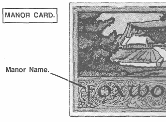
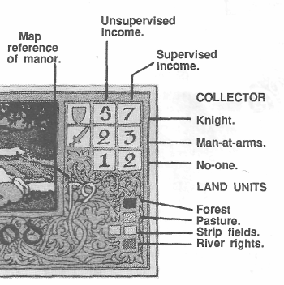
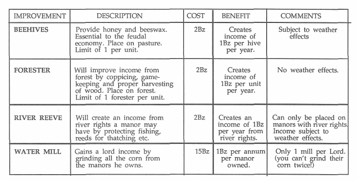
vi. To make an Improvement: At the relevant time during winter place the counter onto the land unit, or by the river in the case of the River Reeve and deduct the money from the treasury. At the next autumn and every subsequent autumn, that improvement will yield the extra income as specified above, subject to the weather, pillaging and other relevant factors. NB: Water Mills can only be built in a manor with river rights. Place the counter on a land unit next to the river.
vii. Relocation: Players may relocate their staff during winter along with any troop relocation. Buildings may not be relocated.
viii. Calculating Incomes: At the end of autumn, incomes are calculated as follows:
(a) Take each manor card and count the basic income according to supervised/unsupervised & troop type collecting income.
(b) Add or subtract according to weather on Arable line of weather table. (Only if you are playing weather rules!)
(c) Add beehives, foresters & river income. Deduct 1Bz for any smoke counter on an arable unit as a result of pillaging.
(d) Adjust according to River and Bees line on weather table.
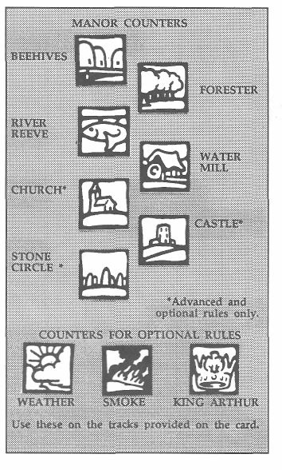
(e) Take income of 1Bz/manor if you own a water mill.
(f) Add up the totals. This is your income for the year.
"So there were sent fore riders to skim the country, and they met with the fore riders of the north, and made them to tell which way the host came, and then they told it to Arthur, and by King Ban and Bar's council they let bum and destroy all the country afore them, where they should ride."
Morte D'Arthur. Book i. Chapter 13.
While others may move freely between manors, and trade and travel is a commonplace between your estate and your neighbour's, movement of troops is a statement of military intent and represents an extension of your influence as much as actual movement on the ground.
i. Movement Allowance: Troops can move up to six miles per season. Distance is measured by the milestones by the roadside. The centre of each manor is also a mile measure.
ii. Movement Phases: Movement is split into three phases of two miles each. Any troops meeting during a phase will carry out combat at the end or the phase and before the next movement phase.
iii. Troop Limits: A player may have a maximum of six troops at any milestone or position at a time.
iv. Order Writing: Before each season players plan troop movements and write these down. Troops must follow written orders during the season except after combat (see in Combat below).
Use the ID numbers on troop counters and manor names to write orders. Make sure orders are written clearly in case of dispute. Troops for which no orders are written must remain stationary during the following season, but may engage in combat if attacked, and may move after combat as described below.
E.g. If a player with two knights (IDs 13 & 17) in Barsham wishes to take the manor of Hazlemere, written orders would look like this:
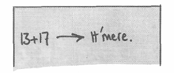
Since the distance is 4 miles, this order would be carried put by the end of phase 2. In phase 3 they would simply sit there soaking up the sunshine and leering at the peasant girls before claiming the manor for their lord at the end of the season.
v. Phasing in Order Writing: Players may note which phase they wish troops to move in during order
writing. For instance, in the above example you may have specified movement in phases 2 and 3 had you wished to delay moving troops out of Barsham for a phase. Alternatively movement in phases 1 and 3 could have been specified.
vi. Movement after Combat; Victorious Troops: Troops must follow written orders unless they engage in combat. After combat, victorious troops have the following options open to them:
(a) They may continue with written orders for the remainder of the season.
(b) They may remain at the site of the combat until the end of the season.
(c) They may move back towards their start position at the normal rate of movement.
vii. Movement after Combat; Defeated Troops: Defeated troops and troops that have opted to withdraw from combat must retreat one mile from the combat point. In subsequent phases they may:
(a) Retreat towards their start position at 2m/phase.
(b) Retreat towards a friendly manor.
If retreat by a withdrawing force as described above would exceed the stacking limit at a milestone, then troops already at the milestone towards which retreat is directed must themselves withdraw to the previous milestone to accomodate the withdrawing troops without exceeding the stacking limit. If all exits from a combat milestone are blocked by enemy troops, then the withdrawing troops will withdraw in a direction determined by a random throw of the dice.
viii. Troops Meeting Between Milestones: When troops from opposing factions starting from adjacent milestones meet, combat takes place between the milestone. At the end of combat all troops will be at the milestone from which the defeated troops started the phase, i.e. The defeated troops will have been pushed back to their starting point.
ix. Troops at End of Autumn: At the end of autumn all troops retire to the nearest friendly manor.
i. Troop Types: There are three types of soldier on the board: The Lord, Knights and Men-at arms. A player may only have one lord on the board at a time, otherwise troop balance is entirely at the players' discretion.
ii. Troop Grade: Each troop type has a grade that reflects their experience ana combat ability and a maintenance cost which is paid annually in Winter.
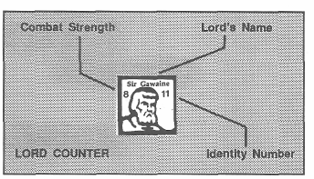
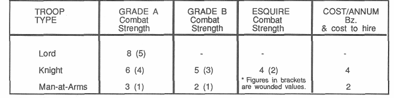
iii. Combat Strength: On each counter there are two figures. At the top left is combat strength; this is always a single digit number. At the top right is the identity number; this is a two digit number.
When a soldier takes a wound, flip over the counter to the wounded side which has a lower combat strength. (But the same ID number!)
iv. Hiring & Promotion of Troops: To hire troops (winter only), pay the annual cost, take a counter and place it in any manor owned by the player. Troops are recruited at the lowest level, e.g. a Knight is recruited as a CS 4 Esquire. The following winter he will be promoted to a Grade B knight etc.
Men-at-arms may be dismissed from service at the start of winter before troop payments, but knights can never be dismissed from service! If a player cannot pay them at the start of Winter, all troops will take a loyalty roll as outlined in Section 11.
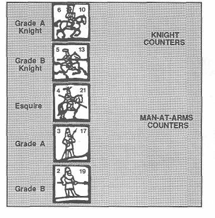
Troops from opposing factions may, at the end of a phase in which they both occupy the same milestone or manor centre, engage in combat. Combat is joined if either party wishes to engage. Combat may be avoided if both parties so wish.
i. Combat Rounds: Combat is fought in rounds. After two rounds, and after each subsequent round, either side may withdraw from the engagement using the movement rules outlined in section 6. If both sides opt to withdraw after a round then both will follow the instructions given for defeated troops.
ii. Combat Results: The outcome of a combat round is decided as follows:
(a) Each player adds the combat strengths of their troops, rolls a dice and adds the result. This gives an Attack Value (AV) for each side.
(b) Compare the Attack Values. The higher AV will become the Stronger side, the lower AV the Weaker side.
(c) Using the difference in attack values, find the outcome for each side on the tables below.
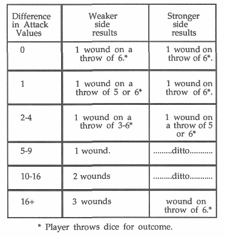
COMBAT RESULTS TABLE
iii. Wounds: Wounds are allocated to troops as follows:.
(a) Wounds taken during a combat round must be allocated as evenly as possible between troops.
(b) Wounds taken during following rounds must be allocated to troops already wounded wherever possible.
(c) When a soldier becomes wounded, flip the counter over and take the lowered Combat Strength into the Attack Value calculation at the next round.
(d) If a wounded soldier takes a second wound he dies and is removed from the board.
(e) Wounds heal during winter.
iv. Choke Points: Certain road sections with restricted side access are known as Choke Points. Choke points are: bridges, road sections with forest each side and road sections passing through a scarp slope. At choke points, only two soldiers from each side can engage in combat at the same time. This means that, for instance, a bridge may be held against a numerically superior force by just two soldiers. Protocol at choke points is:
(a) When combat is joined on a choke point, each player selects two soldiers to fight.
(b) These two fight using normal combat rules.
(c) Soldiers may not be replaced except on the death of one of the combatants.
(d) Either side may elect to withdraw the whole force from the milestone after two rounds in the normal way.
v. Multiple Combat: If more than two players move forces onto the same position during a movement phase, so indicating a three way combat, protocol is as follows:
(a) The first two forces reaching the position will fight first, the last arrival will fight the winner!
(b) If all arrive together then all roll a dice, lowest rolls fight first, highest roll fights the winner.
vi. Combat Examples
1. A Grade A knight (Combat Strength 6) meets a Grade B knight (CS 5) from an opposing faction at a lonely milepost in the middle of nowhere. (No, I don't know what they were doing there either).
They decide to fight. A throws a 4, adds that to his Combat Strength of 6 to give an Attack Value of 10.
B throws a 2 and adds his Combat Strength of 5 to give an Attack Value of 7.
That means that in this combat round A is the stronger side and B the weaker side.
Looking at the Combat Results Table, we see that with an AV difference of 3, both will have to throw a dice to arrive at a result. If B throws a 3, 4, 5 or 6 he will be wounded. A will only be wounded on a throw of 5 or 6.
Both throw. A throws a 4 (no wound). B throws a 3 and is wounded. The B counter is flipped over to the wounded side. At the start of the second round, the situation looks like this:
The position doesn't look too good for B, but he is not able to withdraw before the end of two combat rounds.
In the second round, A throws a 2 and adds this to his CS of 6 to give an AV of 8. B throws a 5 adds this to his wounded CS of 3 to also give an AV of 8. With no stronger or weaker side, both throw a dice.
A throws a 2 (no wound), but B throws a 6, takes a second wound, keels over and dies.
Moral: If you're going to go drinking at inns close to enemy territory, make sure you roll high on the dice.
2. Player A (Lancelot) with troops in Breaume, and player B (Gawaine) who owns Fletcham are positioned thus at the end of spring. They both have their eye on Foxwood, which is an important entry point to the centre of the board, as well as having river rights.
Lancelot writes his orders thus:
| Troops | From | To |
| 17,10,27 | Breaume | Foxwood. |
While Gawaine commits:
| Troops | From | To |
| 22,38,13,35 | Fletcham | Foxwood |
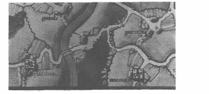
The first phase is called and the position looks like this:
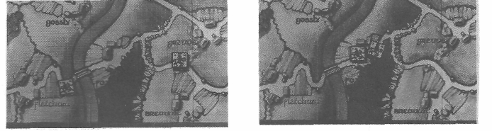
Lancelot looks at Gawaine "Pray Sire, I trust your bumpkins and yokels travel not to Foxwood, that my good knights will claim for my Lordship?" (you can tell what sort of idiots we had to use for play testing).
"Bollocks" replies Gawaine. (See what I mean?) At the end of the season the two sides confront one another in the Manor of Foxwod.
The villeins have stopped work and line the dirt road through the village centre to watch the show.
Let Battle Commence!
Lancelot's forces are:
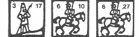
Their Attack Value is: 3+6+6=15 plus the roll of a die which turns out to be 4, so giving an AV of 19.
Gawaine's forces are:
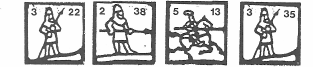
Their Attack Value is 3+2+5+3=13 plus a die roll which turns out to be 3, so giving an AV of 16.
Lancelot is thus the stronger side in this combat round, Gawaine the weaker; the difference being 3. Lancelot throws a dice on the stronger side results and gets a 5. He sustains a wound and chooses to allocate it to his MAA ID 17 whose counter is turned over and combat strength falls to 1. Gawaine throws the dice and gets a 1, so no wound.
In the second combat round AVs are:
Lancelot 1+6+6=14 + Dice roll of 2 = 16. Gawaine 3+2+5+3=13 + Dice roll of 6= 19.
Lo & behold the position is reversed! Cruel fate plays such naughty tricks. (So do rule writers)
Lancelot rolls a 4 on his weaker side result, takes a further wound on his ID 17 MAA who promptly expires, while Gawaine rolls a 3 and takes a wound on his ID 38 man-at-arms.
At this point Lancelot takes a long hard think. Although the AVs are now equal (12:12), one more wound would leave his forces vulnerable, while Gawaine can take another wound with the loss of only 1 point and a measly man-at-arms. Muttering vile and unprintable curses he withdraws, leaving Gawaine to claim Foxwood at the end of the season.
Parse Abbey and Bestly Priory are independent religious establishments that may not be owned by any player (being the property of the church!). However, the income from their honest toils is considerable and being men of peace makes them tempting targets for an autumn raid… Let's put it another way, if you don't look after it, one of the others will....
i. Raiding the Abbey and Priory: Players may, however, raid the Abbey and the Priory during autumn to appropriate their income. This is accomplished by having a force on their grounds at the end of autumn. Income from each is 6 Bz in a poor and average year, 8 Bz in a good year.
ii. Multiple Forces: Should two players have forces in the same establishment at the same time then the following rules apply:
(a) The two forces may engage in combat for the income. However, being on consecrated ground allows one player to withdraw his forces before combat commences rather than after two rounds.
(b) They may work out an agreed split of the income.
iii. Returning to a Manor: At the end of autumn a raiding party always returns to the nearest friendly manor.
From time to time players may be foolish enough to allow their lord to die in battle or from plague (Optional Rules) When this misfortune occurs the following rules apply:
i. Withdrawal to Manors: On the death of their lord, all troops of that player will, for the rest of that season, move towards the nearest manor owned by the player, ignoring any other written orders. Players may select routes to avoid other players' troops, but must move. At the end of the season all troops not in home manors are placed on their nearest manor (calculated in miles).
ii. Remainder of the Year: The player may write no futher orders during the remaining campaigning seasons of that year, although his troops may defend the manors they currently occupy.
iii. Appointment of a New Lord: During winter, a Grade A knight may be appointed the new lord (If no Grade A knight is available then the player must wait out the year until one is available).
To appoint a new lord the steps are:
(a) Your main Knight of the Round Table is dead and therefore cannot take part in the remainder of the game. You must therefore pick a grade A knight to replace him.
(b) Mark the ID number of the selected knight on your order sheet. He is now your lord.
(c) His combat strength remains the same as before, but if he is killed in battle you must repeat the procedure outlined above.
AIthough men-at-arms may be dismissed from service at the start of winter, a lord may never dismiss any from his retinue of knights. A lord must pay as many knights as possible from his treasury and may not withhold any money while knights remain unpaid.
i. Unpaid Retinue: If, however, there is insufficient funds to pay all the knights then all unpaid and partially paid knights are dismissed from service.
ii. Loyalty Rolls: After dismissal of unpaid knights those remaining will take a loyalty roll to see if they wish to remain in service to a lord who can't even pay those who make a living out of dying for him!
Roll the die for each knight. On a roll of 5 or 6 the knight deserts and is removed from play, taking with them their pay. The player may now re-arrange his forces within his manors as in normal play.
These rules may be played with either basic or advanced game. You need not play all the optional rules, just the ones you wish to use.
Weather will obviously affect harvests and thus incomes. However, the effect on forestry is assumed to very small and therefore only arable, beekeeping and river incomes are detailed below.
i. Deciding Weather: Roll a die at the end of spring, summer and autumn. Move the weather counter along the weather track by that number of spaces. The position of the counter at the end of autumn gives you the year's weather. There are three possible outcomes: bad, average and good years.
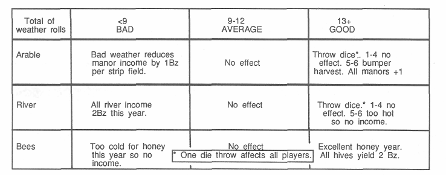
"But Sir Lancelot drew him to his strong castle...then came Sir Gawaine with an huge host and laid a siege all about, both at the town and at the castle, and they -were made strong war on both parties."
Le Morte D'Arthur. Book xx. Chapter 11.
i. Manor Houses: All manors have at the manor centre a fortified manor house. Players must hold the manor before taking advantage of the manor house as outlined below.
When a force attacks the manor the defender has three options:
(a) Defend in the open at normal attack values. The invader cannot pillage or pass through.
(b) Retire to the manor house. The invader may either attack the manor house, in which case the defender will have an Attack Value increase of +5 to reflect the better defensive position, or, ignoring the cowards bottled up in the manor house, pillage the manor (see below for pillaging rules) and next movement phase or season pass through the manor.
(c) Defender may fight in the open for two rounds then retire to the manor house. Attacker may now pillage the manor, and move through next movement phase or season.
ii. Castles: Players may purchase castles at a cost of 10Bz. When placed on a manor, the defenders have an increased Attack Value of +5 when fighting in the open, or +10 if they decide to hole up in the castle. The invader has the same options as above. Once built, a castle stays for the remainder of the game, changing ownership if the manor is taken.
iii. Siege: An invading player's forces may siege another player's forces which have retreated into a manor house or castle by remaining within the manor until the following season. Sieging forces can pillage in the first season only.
At the end of the third movement phase of the second season the siege is deemed to be successful and the defending forces will fight at normal attack values. New forces may be moved into the manor to reinforce either side (provided they do not exceed the stacking limit), but if the defender moves new forces into the manor, a battle must take place.
Players can wreak havoc on other factions by waging economic war and attacking their source of income. A modest raid on a key manor, one containing the water mill say, can completely upset another lord's carefully balanced budget. The result is a joy to behold!
i. To Pillage: Troops entering a manor owned by another player may pillage provided that:
(a) the manor is unoccupied, or
(b) The defending forces have retired to the manor house or castle.
Pillaging troops may:
(a) Burn all strip fields on a roll of 2-6. Roll for each strip field in the manor. If it is burned place a smoke counter on the land unit.
(a) Destroy all beehives on a roll of 2-6. If it is destroyed, remove the beehive.
(c) Loot goods and cash. Pillaging player rolls a die and adds that number of bezants to his treasury (Defending player need not deduct this money).
(d) Burn a water mill on a roll of 4-6. If destroyed remove from the board.
(e) Kill reeves on a roll of 5-6. If killed remove from the board.
ii. Effect of Pillaging on Income: At harvest, deduct 1 bezant from the income for each strip field with a smoke counter. Remove the smoke counter after the harvest.
iii. Pillaging during Sieges: A player sieging another player's forces in a manor house or castle may pillage the manor as decribed above.
NB: Pillaging is a substitute activity for combat. If troops are engaged in combat they may not pillage.
At the start of spring each year, a player rolls the dice three times and adds the results. Consult the fate roll table on page 20 and carry out any actions immediately.
In the event of players running out of time for a game, wishing to play to a set time or otherwise wishing to shorten Excalibur, valuation of a player's assets to find a winner is carried out as described below.
This valuation system can also be used for tournament play, where each game lasts for, say, two hours after which a valuation is carried out.
i. Basic Game Valuation.
i. Value each manor held at 15Bz.
ii. value all improvements at face value, e.g Reeves at 2 Bz, bee hives at 2 Bz etc.
iii. Value knights at 4 Bz and men-at-arms at 2Bz. iv. Add the totals and any cash held.
v. The winner is the player with the highest amount of money after valuation.
ii. Advanced Game Valuation: In the advanced game, convert Bezants to Reverence Points at the rate of 1Bz = 1 RP, add in existing reverence points to arrive at a total and a winner.
These rules significantly change the nature of the game by introducing Reverence Points: in effect a victory point system. The basic premise of the advanced game is that at varying points through the game King Arthur will visit and award Reverence Points according to how well each player is performing his duty of developing the economic and cultural life of his estates. It is assumed that players opting for the advanced game will be playing most if not all of the optional rules.
The game starts in the autumn as usual and finishes at the end of autumn ten years later. The winner is the player who during those ten years accumulates the most Reverence Points.
Players earn Reverence Points by accumulating income and by building churches or stone circles. Periodically King Arthur visists and awards Reverence Point.
King Arthur is most concerned with the spiritual well-being of his new subjects and any lord wishing to curry his favour would do well to listen to his suggestions. He suggests that you build religious sites to foster the spiritual life of your peasants. He will show his pleasure at your concern on his tours of inspection.
i. Christian Lords: Only Christian lords may build or own churches. They may not build or own stone circles. Only Christians can destroy stone circles.
ii. Druid Lords: Only Druid lords may build or own stone circles. They may not build or own churches. Only Druid lords can destroy churches.
iii. Changing Religion: A player can change religion at any point of the game by destroying all the religious sites of his previous religion that he owns and declaring for the new religion.
"Then the king let rear and devise in the same place whearat the battle was done a fair abbey, and endowed it with great livelihood, and let it call the Abbey of La Beale Adventure."
Le Morte D'Arthur. Book 4. Chapter iv.
i. Parish Boundaries: A parish is made up of a group of manors. All manors within a parish are grouped together and the the manor names are printed in the same colour on the playing board.
ii. Building within a Parish: A parish may contain up to one church and one stone circle (but not two of one kind).
Churches and stone circles are built during winter in the Improve Manors phase and cost lOBz to build. To build a religious site a player ensures that the parish does not already contain a religious site of that
type, pays the money from his treasury and places the appropriate counter on a pasture in a manor within the chosen parish.
iii. Competition for Building Sites: If more than one player wishes to build the same religious site in the same parish during the same winter, then precedence is chosen as follows:
(a) The player who owns most manors in the parish may build.
(b) If both players own the same number of manors the right to build is auctioned off to the highest bidder.
(If players wish to build different religious sites in a parish during a winter then they may both go ahead.)
iv. Value: Each time King Arthur visits he will award Reverence Points as follows:
(a) 20 Reverence Points for any church or stone circle within a manor that a player owns at the time of the visit, provided there is no other religious site within that parish.
(b) When a parish contains both a church and a stone circle the King will award 10 Reverence Points
to each player owning the manor containing the site.
v. Ownership: Churches and stone circles have no attack or defence value and ownership passes when the manor in which it is built changes hands.
vi. Destruction: A Druid lord capturing a church must destroy it immediately on claiming the manor. Likewise a Christian lord capturing a stone circle.
Despite pressing duties elsewhere in the kingdom, Arthur will visit several times in the game to evaluate his servants' efforts in establishing a prosperous and fruitful estate.
i. Progress: At the start of each autumn, roll the dice to show what progress King Arthur has made towards his next visit. Move the King Arthur counter along the road from Camelot to the board by the number indicated on the dice.
ii. Arthur's Visit: When the combined totals of the annual throw reach ten, the King arrives. The King will now assess each player's progress. This is carried out as follows:
(a) For every Bezant of income that Autumn he will award 1 Reverence Point.
(b) He will award 20 Reverence Points for each church and stone circle owned when in a parish on its own.
(c) He will award 10 Reverence Points for each stone circle and church owned when sharing a parish with a site of the other religion.
(d) He will deduct 15 Reverence Points if a player has troops in the Abbey or Priory at the time of the visit.
NB: The King's progress from Camelot towards the board is recorded on the card carrying the weather effects table.
Reverence Points are awarded during the king's visits as outlined above, and players should keep a total of Reverence Points awarded. Reverence Points cannot be lost once awarded and after ten years it is the total of Reverence Points alone that determines the winner. Reverence Points cannot be traded, exchanged or cashed in during the game and a player's total cannot fall below zero.
King Arthur will visit after ten years for his final assessment.
At the end of autumn of the tenth year, therefore, award Reverence Points as normal, ignoring whether he visited last year or not. The final aggregates of Reverence Points giving the final scores for the game,
and the player with the most Reverence Points is the winner.
The Feudal System is one of the less well understood social organisations from our historical past. Of course, most of us know the bare details of how it worked but, while tribalism, Roman rule and other archaic forms of government are better grasped by the modern mind, it takes a real effort of will to truly get behind feudalism and understand why and how it arose and the consequences of its operation, m part it is because the historical evidence for its evolution is fragmentary, contradictory and extremely complex. It is evident also that there were several types of feudal system operating in England alone, let alone hi other parts of Europe. Finally the nature of feudalism was constantly changing.
For most purposes, though feudalism can be split into two periods. In the first, which starts way back into the early years of Saxon rule in England following their invasion and conquest hi the fifth century AD and terminates at the Norman Conquest (for lack of a better date on which to hang our opinions), English society changed from one of free, tribalistic, landholders (or landsharers might be more accurate) and cultivators ruled by a local tribal king to a nation ruled by one king and in which the vast majority of the population were tied into a structure of dues and obligations that rendered the peasant farmer a virtual slave to his master. The second which ran from the conquest for about two hundred years saw the horsed knight inserted into the structure, the manor become the geographical hub of feudal organisation and a strict codification of feudalism and its survey under Domesday. Norman feudalism was its high point in England and from then on it started to decline and although much of the outwards structure of feudalism remained in tact, England slipped slowly into the medieval period.
Two myths about feudal society are still popular. The first is that it lasted a long time. In reality it never reached its zenith in Europe and started to decline even as it peaked. The second is that it represents some sort of high point in social evolution. As we shall see, feudalism was a profoundly low point in western civilisation, the response to exceptional and debilitating circumstances that had not been before and would not occur again.
Structurally, the feudal system was an extraordinarily complex series of legally enforceable obligations, taxes and services rendered by a lower social class to a higher social class that stretched in an unbroken chain from the tied peasant up to the king. In theory nobody owned any land except the king, and failure to render the correct services or due to one's superior could bring about disenfranchisement from the land and thereby complete destitution.
In comparison to a modem society two other factors must be pointed out as fundamentally different. Firstly that there was no urban life in the way that we understand it. There were towns, even cities, but being very much smaller than the modern term would imply and being principally seats of ecclesiastical, administrative and military power meant that
residing in a town was not an option open to most people. Secondly, the whole of society from serf to king was intimate with the land, living on it, working it and being wholly dependent upon it. Even the highest lord would find much of his working life to be taken up with supervising his estates, despite the onorous military duties. Analysis of Domesday gives a chilling snapshot of feudal England.
Urban population: 175,000 (approx 10%.) Rural population: 1,600,000 (approx 90%)
The rural population was split into several main groups:
Villeins, bordars, cottars etc. (bonded peasants of various degree): 200,000.
Slaves: 28,000
Freemen (of various degree): 37,000
Clergy: 15,000
Tenants (nobles or major land holders): 7,000.
(These latter figures exclude dependents, so will not add up to the figure for rural population given above).
Put simply, of the working rural population over 80% were not free men. It is difficult to escape the conclusion that feudal life consisted for most of the population principally of unending and unrewarded labour interspersed with savage war. When faced in 1100AD with a society of such an unrelieved poverty of material, social and spiritual choice and compare that with the relative prosperity and freedom of Roman Britain in 400AD, one can ask how we frittered away such an inheritance over the intervening 600 years.
Much of the blame must lie at the door of the Saxons. Barbarian pillagers of a prosperous, even brilliant, Roman province they plunged it into four hundred years of continuous strife. Where Roman law kept Britain peaceful and prosperous, the Saxons could only carry on a never ending series of intertribal civil wars. Where Roman arms kept the barbarians largely at bay, the inept, technically incompetent Saxons were virtually helpless against the Vikings and Danes. The Vikings by the extent and barbarity of their raids became a byword for both audacity as well as savagery. The Danes were able to partition the country and demand huge tributes. Where there was once one province, under the Saxons there was seven, no five, no eight. Blink and another civil war had shifted the political scenery around again.
Continuous civil war has a debilitating effect on a nation. Its trade declines because merchants fear for their goods, their lives and their profits. Its agriculture suffers because the tillers of the soil are turned to hewers of limbs. A year's crops might be burned by an enemy or even by a friend because it might fall to an enemy. Stockpiles of foodstuffs are stolen or destroyed. Coinage is not minted or honoured. The list is endless, the result the same. Poverty of mind and body. A nation turned only to war, where the warrior is everything, the whole economy dedicated to fielding, feeding and keeping them. For such was European
feudalism, a system where the whole productivity of society was dedicated to the horsed knight. The irony is that any half decent Roman legion or Greek phalanx would have made short work of Norman cavalry, such was the dead-end thinking of the feudal mind.
Of course the people who suffered the most were the peasants. In a society constantly at war the peasant farmer must rely on the soldier to protect him. When the protector is also the lord to whom dues are to be paid we have a structure that bleeds power away from the free peasant farmer to the soldier landlord. A farmer unable to pay his dues through raids or whatever throws himself at the mercy of the lord who while protecting him demands that the peasant commutes his dues to labour. The peasant is now working both his master's and his own land. As he gets no reward for working his master's land and he is now barely able to support himself and his family from reduced time to
his own land, he and his descendants will never be able to regain their freedom. Economic pressures caused by political instability produced a self perpetuating downward spiral that gradually changed a people of free landholders into a servitude near to slavery. Although feudalism was much more complex than this in practice, and there was still even under the Normans a body of nominally free peasantry, the position of the peasant has rarely been worse than hi the feudal system.
But prosperity was the enemy of feudalism. The growth of towns, a lower level of civil war under Norman rule and the devastations of the plague loosened the shackles of high feudalism, until by the mid-thirteenth century both society and the physical landscape started to take a distinctly medieval look. After six hundred years of decay English society was starting to look up, not down.
The basic concepts of Excalibur had been going round in my head for several years. A small scale feudal game of skirmish warfare between local lords over the wealth of the land. I could not recall a game on these lines having been done before and everyone I talked to about it seemed to like the idea (unlike many of the ideas I put around to the unfortunates who work or live within hearing distance of me!). But it was not just combat that was going to be important in the game, it was the ability to maintain your retinue, as from my own reading it is clear that the biggest headache any feudal lord had was squeezing enough money out of the land to maintain his retinue and position.
Early attempts at a board were a map of Ordnance Survey like detail with every last stone showing. Players foolish enough to do battle had to create the terrain large scale from cut out pieces on a completely different playing area. The combat rules were as complex as a miniatures wargames rules...no, they were a miniatures wargames rules. After a small skirmish early in the game had lasted forty minutes while the other two players kicked their heels it was evident that a drastic rethink was in order.
I don't know how other games designers work, but after a disastrous first play-test my view of a concept is dramatically changed From boyish enthusiasm at the brilliance of the idea it rapidly turns to the displeasure of failure. The idea has to worm its way back into favour before being let out again! The game then lay dormant for
about two years as the slow process of restructuring took place in my mind. Then in the sultry heat of an August Sunday afternoon in 1988,1 slipped the leash and went and sat under the birch trees at the bottom of our garden and wrote down, virtually intact, the whole rule set for the second version of the game. The following Monday we playtested it and suddenly we had a game, not a disaster area. After six months of inexorable testing and improvement the final version of the game surfaced, very much like the August Sunday version. Time had done its work.
Game Concept: Julian Musgrave.
Game Development: Chris Courtiour, Richard Milner, Jamie Walker, Dieter Schmidt.
Box Art: Ed Dovey.
Board, counters & manor cards: Frank Gerwin.
All game designs, artworks, concepts, components and mechanics are copyright of Wotan Games 1988. 1989. & Citadel (Germany) 1989.
At the end of winter roll die three times and add.
| 3 | Plague. All players roll once per soldier including their lord. On a 6 the soldier dies. |
| 4 | Lightning strikes a church tower. Each player who owns a church rolls a die and the highest rolling player then rolls for a church that he owns. On a roll of a 6 that church is damaged by the strike and will only count for half reverence points until it is repaired costing 5Bz. If the player does not roll a 6 then the next highest rolling player rolls on one of his churches and so on until a church is struck. Put a smoke counter on the church until it is repaired. |
| 5 | Lightning strikes a stone circle. Follow procedure outlined above for churches. |
| 6 | Peasant's revolt. This affects all manors of all players that contain less than two soldiers. Take each manor in turn. The peasants throw any soldier out of the manor. Roll for the soldier. On a roll of 6 he is killed. If he survives he retreats to a connected friendly manor. If this troop movement raises the number of troops in this manor to more than one then that manor will not revolt. The manor then reverts to no owner and the card is surrendered and is available for claiming as at the start of the game. |
| 7 | Winter storms damage castles. Each player rolls on each castle he owns. On a roll of a 6 the castle is damaged and only counts for +2 and +5 in defence until it is repaired for 5Bz. Put a smoke counter on a damaged castle until it is repaired. |
| 8 | Spring floods. Roll a die for each Bridge. On a five or six it is washed away this year. Place a smoke counter on the bridge and remove next winter. |
| 9 | A knight and man-at-arms deserts from a manor of the player with the most manors. |
| 10 | Forest fires. Each player rolls a die for each forest unit he owns. On a 5 or 6 they are ravaged with fire and will provide no income this year. Place a smoke counter on the unit and remove next winter. |
| 11 | No income at Carse Abbey and Bestlv Priory this year. |
| 12 | A knight and man-at-arms join the player with the fewest manors. |
| 13 | A senior knight returns from abroad and joins the player throwing highest on the dice. |
| 14 | Collect scutage of 1 Bz per manor. This cannot be spent until next winter. |
| 15 | Stonemasons finish nearby cathedral and are looking for work. All churches will be at half price next winter. |
| 16 | Early swarming. Each player rolls for each bee hive he owns. On a 4, 5 or 6 place an additional hive on an adjacent free pasture, if available. This pasture may not already have a bee hive but may be separated by a road, river or high ground. A player may choose whether his bees swarm into another player's manor. |
| 17 | The king orders boundary changes. Each player claims a manor from the player on his right. |
| 18 | Double income available from Carse Abbey and Bestly Priory this year. |
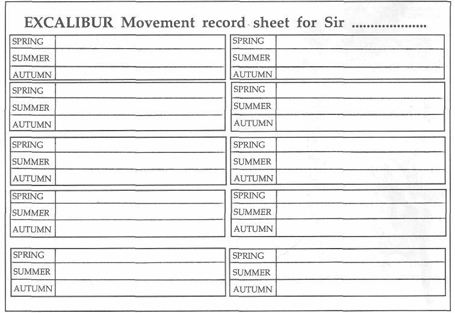